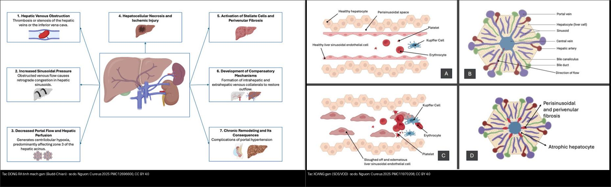
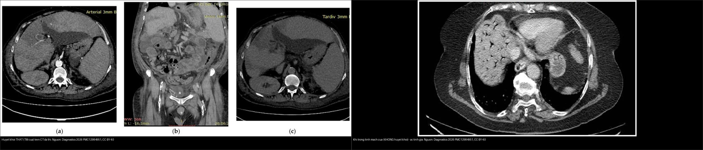
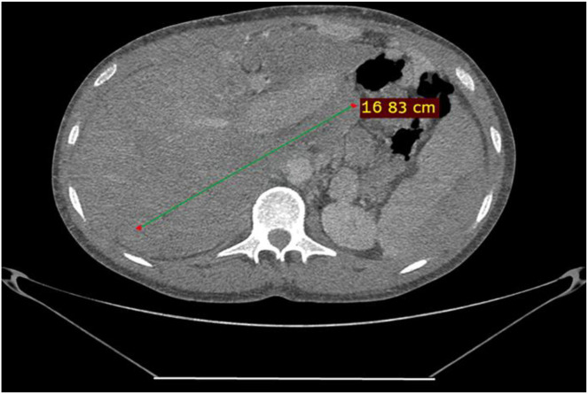
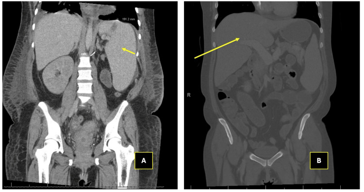
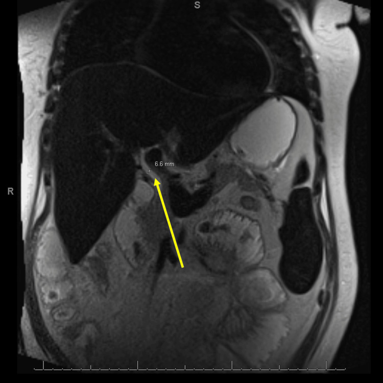
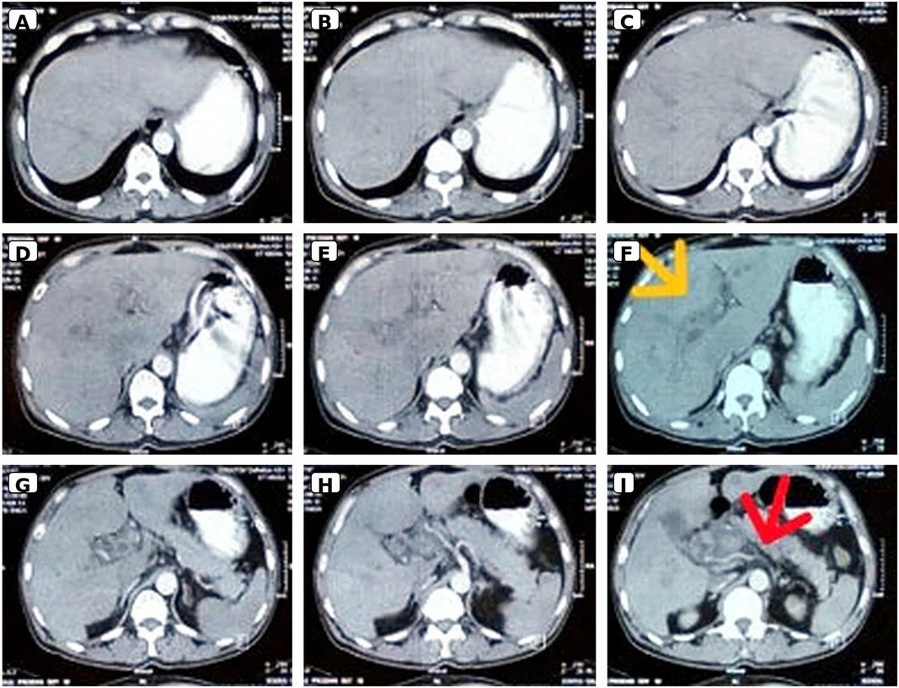
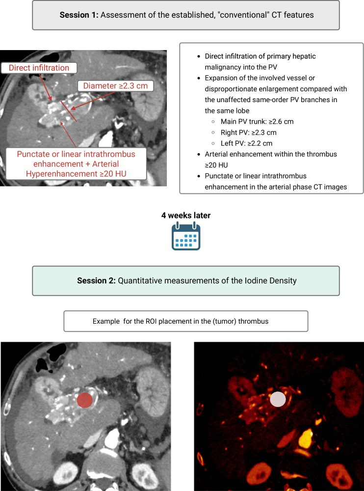

124 — Bệnh mạch máu gan: Budd-Chiari, tắc xoang gan (SOS/VOD) & huyết khối tĩnh mạch cửa / Hepatic vascular disease: Budd-Chiari, SOS/VOD & Portal vein thrombosis
Tags: pattern:tac-mach-gan vung:gan vung:mach-cua score:Rotterdam score:Vp protocol:CT-MRI-da-thi incidentaloma:huyet-khoi-tm-cua
Mức chắc chắn (certainty): tổng hợp y văn (literature synthesis) — nhóm tự biên từ y văn mở (Am J Gastroenterol 2026 PMC13313475; Cureus 2025 PMC12696600 & PMC11970208; Radiol Case Rep 2026 PMC12856290; Diagnostics 2026 PMC12984951; Clin Case Rep 2026 PMC13498970; Eur Radiol 2026 PMC13282226), số liệu lấy nguyên từ bài gốc; ca MRI dị vật mắt tách riêng ở bài 401.
Câu hỏi gốc của bài: đứng trước một gan bị "ứ trệ mạch máu", làm sao phân biệt tắc dòng RA (Budd-Chiari) – tắc tại XOANG (SOS/VOD) – tắc dòng VÀO (huyết khối tĩnh mạch cửa), và mỗi thực thể xử trí khác nhau thế nào? Gan là tạng cấp máu kép (75% tĩnh mạch cửa + 25% động mạch gan) — học thuyết cốt lõi của hệ Bụng — nhưng dòng RA chỉ có đường tĩnh mạch gan → nên tắc dòng ra gây ứ máu toàn gan; hiểu "vào–xoang–ra" là chìa khóa cả bài.
1. Tổng quan bệnh học – cơ chế hình ảnh
Bối cảnh giải phẫu – huyết động (TẠI SAO hình ảnh lại như vậy):
- Máu vào gan bằng tĩnh mạch cửa (portal vein) + động mạch gan; máu ra chỉ bằng các tĩnh mạch gan (hepatic veins) đổ vào tĩnh mạch chủ dưới (IVC) rồi về tim. Vì vậy tắc dòng ra = ứ máu toàn gan (congestive hepatopathy), còn tắc dòng vào = teo vùng do cửa đó nuôi (atrophy), không ứ máu.
- Học thuyết động học bắt thuốc (enhancement kinetics) của hệ Bụng (xem AGENTS.md): u/viêm thay đổi ngấm thuốc theo thì. Trong bài này, bản chất huyết khối (thrombus) mới quyết định tín hiệu: huyết khối cũ T1 tăng/T2 giảm (do hemoglobin thoái biến), huyết khối tươi T1 giảm/T2 tăng, mô u trong lòng mạch ngấm thuốc thì mạch máu (động mạch/cửa) như mô u.
A. Hội chứng Budd-Chiari (Budd-Chiari syndrome – BCS): tắc đường ra tĩnh mạch gan, từ tiểu tĩnh mạch gan đến chỗ hợp lưu gan–tĩnh mạch chủ, KHÔNG do nguyên nhân trong tim/màng ngoài tim (PMC13313475).
- Nguyên phát: huyết khối trên nền tăng đông/myeloproliferative neoplasm (MPN) — MPN gặp 35–50% ca BCS, đột biến JAK2 V617F 35–45% (khuyến cáo tầm soát JAK2 V617F thường quy); thể tắc màng IVC hay gặp ở châu Á (MPN chỉ ~2,4% ở Trung Quốc).
- Thứ phát: xâm lấn bởi u (HCC, di căn), chèn ép (nang sán, đa nang gan), chấn thương/phẫu thuật gan, rất hiếm do sarcoidosis.
- TẠI SAO đặc trưng "thùy đuôi to" (caudate lobe hypertrophy): thùy đuôi dẫn lưu trực tiếp vào IVC bằng các tĩnh mạch ngắn riêng → vùng này không bị ứ và phì đại bù trừ; phần gan còn lại ứ máu, ngấm thuốc không đồng nhất thì cửa/muộn trừ thùy đuôi — đây là "flip-flop"/"nutmeg liver" trên hình ảnh.
- TẠI SAO ~15% bệnh nhân KHÔNG triệu chứng: nếu tắc không hoàn toàn/từ từ, hệ tuần hoàn bàng hệ trong–ngoài gan hình thành kịp → gan còn bù. Ngược lại thể tối cấp (fulminant) tắc nhanh, ít bàng hệ → suy gan cấp (diễn tiến nhanh, tiên lượng nặng).
- Dịch tễ: hiếm — 0,42% trong mổ tử thi; tuổi khởi phát 20–45 tuổi (trẻ hơn các huyết khối tạng khác). Điều trị theo bậc thang giúp sống còn 10 năm tới 72–73% (Trung Quốc).
B. Tắc xoang gan / bệnh tắc tĩnh mạch gan (sinusoidal obstruction syndrome / veno-occlusive disease – SOS/VOD): tổn thương nội mô xoang gan (sinusoidal endothelium) do hóa trị liều cao (busulfan/cyclophosphamide), xạ trị, alkaloid pyrrolizidine — hay gặp nhất sau ghép tế bào gốc tạo máu (HSCT).
- Chuỗi bệnh sinh (TẠI SAO ra hình ảnh): nội mô xoang bị phá hủy → bong tế bào + huyết khối vi mạch trong xoang → ứ máu xoang → gan to + tăng áp cửa + tăng bilirubin; về sau xơ quanh xoang (perisinusoidal fibrosis) không hồi phục (PMC11970208).
- Cửa sổ thời gian: biểu hiện trong vòng 3 tuần (21 ngày) sau ghép. Yếu tố nguy cơ: điều trị hóa trị diệt tủy (myeloablative), người cho ghép nửa hợp (haploidentical), bệnh gan nền có sẵn.
C. Huyết khối tĩnh mạch cửa (portal vein thrombosis – PVT): huyết khối trong líp của hệ tĩnh mạch cửa. Học thuyết "tam giác Virchow" (ứ trệ – tăng đông – tổn thương nội mô) giải thích vì sao xơ gan, ung thư, cắt lách, chấn thương đều sinh PVT.
- Cấp vs mạn: cấp = huyết khối mới + nguy cơ thiếu máu ruột (nếu lan tĩnh mạch mạc treo); mạn = tắc kéo dài > 6 tháng, thường không triệu chứng, có biến đổi dạng hang (cavernous transformation = mạng bàng hệ quanh tĩnh mạch cửa bị tắc) (PMC12984951).
- Huyết khối nhiễm khuẩn (pylephlebitis) = huyết khối mủ, biến chứng ổ nhiễm trong vùng dẫn lưu cửa (viêm ruột thừa, viêm túi thừa, viêm tụy, viêm đường mật).
- Khí trong tĩnh mạch cửa (portal venous gas) = tắc KHÔNG do huyết khối (thường trong bối cảnh thiếu máu/hoại tử ruột) → hình ảnh giống tắc nhưng xử trí NGƯỢC (chống đông không giải quyết nguyên nhân).
- Phân biệt sống còn – "huyết khối lành" (bland) vs "huyết khối u" (neoplastic/portal vein tumor thrombosis – PVTT): trong HCC, PVTT loại bỏ khả năng chữa khỏi (cắt gan/ghép gan) ở phần lớn bệnh nhân → đây là câu hỏi bắt buộc mọi lần thấy huyết khối cửa trên nền u.
Ngưỡng định lượng mấu chốt (Argon – cửa 1):
- BCS: caudate vein ≥ 3 mm gợi ý BCS trên siêu âm (PMC13313475); Rotterdam I/II/III → sống không ghép 5 năm 89% / 74% / 42%; Clichy > 5,4 → sống không ghép 5 năm 65% vs 95%.
- SOS: Baltimore = bilirubin > 2 mg/dL + ≥ 2 dấu (gan to, cổ trướng, tăng cân > 5%); phác đồ defibrotide 6,25 mg/kg IV mỗi 6 giờ, ≥ 21 ngày.
- PVT huyết khối u: mật độ iod (photon-counting CT) huyết khối u 1,73 mg/mL (thì ĐM muộn) / 1,96 mg/mL (thì cửa) vs huyết khối lành 0,42 / 0,58 mg/mL; cut-off 0,9 (ĐM muộn) và 1,14 mg/mL (cửa) → Se 100%/Sp 95,9% và Se 93,1%/Sp 100% (PMC13282226).
2. Mẫu hình + chẩn đoán phân biệt theo vị trí (Gamut)
Gamut theo TẦNG dòng máu bị tắc (vào – xoang – ra):
- Tắc tầng RA (tĩnh mạch gan/IVC) → gan ứ máu to, thùy đuôi phì đại, bàng hệ, cổ trướng "dịch tiết": Budd-Chiari (huyết khối/màng), hội chứng gan tim (cardiac hepatopathy/constrictive pericarditis), tắc IVC do u/chèn ép.
- Tắc tầng XOANG (huyết động trong xoang) → gan to + tăng áp cửa nhưng tĩnh mạch gan còn thông: SOS/VOD (sau ghép, alkaloid, oxaliplatin), viêm gan ứ mật/dùng thuốc, nghìn u máu gan (hemangiomatosis).
- Tắc tầng VÀO (động mạch cửa) → huyết khối trong lòng mạch, hạ phân thùy giảm tưới, biến đổi dạng hang: huyết khối cửa lành, huyết khối u (PVTT), pylephlebitis, khí trong tĩnh mạch cửa (không do huyết khối), TIPS huyết khối, tắc tĩnh mạch mạc treo.
- Bối cảnh lâm sàng quyết định gamut: sau HSCT + tăng bilirubin + tăng cân → nghĩ SOS; trẻ + đau hạ sườn + cổ trướng dịch tiết + gan to → nghĩ BCS; xơ gan/HCC + huyết khối cửa → bland vs PVTT.
- Mnemonic "IN–SINUS–OUT": IN = portal vein (PVT) · SINUS = SOS/VOD · OUT = hepatic vein/IVC (Budd-Chiari).
3. Bảng so sánh phân biệt (ma trận đối chiếu)
| Thực thể (entity) | Hình ảnh điển hình (US/CT/MRI) | Chốt vào (rule-in) | Chốt loại (rule-out) | Gợi ý xác nhận |
|---|---|---|---|---|
| Budd-Chiari (BCS) | Gan to; thùy đuôi phì đại ngấm đồng nhất, phần còn lại ngấm không đồng nhất thì cửa; bàng hệ trong gan "mạng nhện"/dưới bao; tĩnh mạch gan không thấy/không dòng | Thùy đuôi to giữ ngấm + không thấy tĩnh mạch gan + bàng hệ + cổ trướng | Có màng/khuyết trong lòng tĩnh mạch gan hoặc IVC (chụp tĩnh mạch) là chốt | Doppler US → CT 3 thì → chụp tĩnh mạch gan/IVC (venography) là chuẩn vàng |
| SOS/VOD (sau HSCT) | Gan to, lách to, cổ trướng, giãn tĩnh mạch cửa, dày thành túi mật, KHÔNG giãn đường mật; MRCP loại tắc mật | Bộ tiêu chuẩn Baltimore/Seattle/EBMT + hình ảnh trong 21 ngày sau ghép | Bệnh cảnh lâm sàng + không giãn đường mật → loại tắc mật | Lâm sàng là chính; US-Doppler + CT/MRI xác nhận tăng áp cửa; sinh thiết chỉ khi không điển hình |
| PVT huyết khối lành (bland) | Khuyết thuốc trong lòng tĩnh mạch cửa, không ngấm thêm thì cửa, dần thu nhỏ theo thời gian, có thể tái thông | Khuyết thuốc KHÔNG ngấm + không phì đại mạch + không có u gan xâm lấn | Ngấm thuốc thì mạch + phì đại mạch + diện tiếp xúc u > 90° → u | CT 3 thì (ĐM/cửa/muộn) + MRI DWI; theo dõi kích thước |
| PVTT (huyết khối u) | Mạch phình lớn bất thường, huyết khối ngấm thì ĐM/cửa, có mạch nuôi trong huyết khối; gắn khối HCC | Ngấm mạch + phì đại tĩnh mạch + mật độ iod ≥ 0,9–1,14 mg/mL | Ngấm kém, không phì đại mạch → huyết khối lành | PCCT/dual-energy (mật độ iod) hoặc MRI gadoxetate + DWI; phân độ Vp0–Vp4 (LCSGJ) |
| Pylephlebitis | Huyết khối cửa + khí trong thành/mạch + ổ nhiễm trong bụng; sốt cao | Huyết khối cửa + sốt + ổ nhiễm (ruột thừa/túi thừa) | Không ổ nhiễm, không sốt → huyết khối vô khuẩn | CT bụng có cản quang + cấy máu; kháng sinh + xử trí ổ nhiễm |
| Khí trong tĩnh mạch cửa (không do huyết khối) | Khí dạng nhánh chạy ra ngoại vi tới dưới bao gan, đôi khi giống "khuyết thuốc"; hay kèm khí thành ruột/mất ngấm thành | Khí trong tĩnh mạch cửa + bệnh cảnh ruột thiếu máu | Có huyết khối đặc ngấm thật trong lòng → PVT thật | CT bụng cấp cứu: đánh giá thành ruột/tĩnh mạch mạc treo; không chỉ dùng chống đông |

Trái: Budd-Chiari — sơ đồ tắc dòng ra tĩnh mạch gan. Phải: SOS/VOD — sơ đồ tổn thương nội mô xoang gan. Nguồn: Cureus 2025 (PMC12696600, PMC11970208), CC BY 4.0. Ảnh ghép letterbox.
Trái: huyết khối THẬT trên CT đa thì (khuyết thuốc trong lòng mạch). Phải: khí trong tĩnh mạch cửa — tắc KHÔNG do huyết khối (hay gặp trong thiếu máu/hoại tử ruột). Nguồn: Diagnostics 2026 (PMC12984951), CC BY 4.0. Ảnh ghép letterbox.Đọc chuẩn ba dấu hiệu hay nhầm
- Bàng hệ dạng hang (cavernous transformation): là di chứng của tắc cửa MẠN, gồm mạng tĩnh mạch bàng hệ quanh tĩnh mạch cửa nằm NGOÀI lòng mạch — KHÔNG phải "nhiều huyết khối"; phân biệt bằng vị trí (quanh mạch cửa, thường ở rốn gan).
- Thùy đuôi ngấm đồng nhất trong BCS: đây là dấu hiệu dương tính giúp chẩn đoán (vùng dẫn lưu riêng), KHÔNG phải "giả u" — đừng nhầm với nốt tăng mạch của u.
- Nốt loạn sản/tăng sản trong BCS mạn: nhiều nốt tăng mạch thì ĐM kích thước vài mm–4–5 cm; khác HCC ở chỗ không thải thuốc + không vỏ (nhưng phân biệt có thể phải mô bệnh) (PMC13313475).
4. Protocol chụp + hệ phân độ/điểm chuẩn hóa
- Siêu âm Doppler là đầu tay: tìm tĩnh mạch gan dày/hyperechoic thay tĩnh mạch, khối echo trong lòng mạch, đảo dòng tĩnh mạch cửa, và đường kính tĩnh mạch đuôi ≥ 3 mm (gợi ý BCS). Hạn chế: phụ thuộc người làm, khó thấy đầu xa tĩnh mạch gan và đoạn trong hoành của IVC.
- CT gan 3 thì (ĐM muộn–cửa–muộn) và MRI gan (T1/T2 fat-sat + DWI + thì mạch máu) là chuẩn không xâm lấn: đánh giá dòng RA (tĩnh mạch gan/IVC), dòng VÀO (tĩnh mạch cửa), bàng hệ và nốt trong gan. Chụp tĩnh mạch gan/IVC (venography) khi cần chốt và can thiệp.
- Phân độ/grading:
- Budd-Chiari: tiên lượng theo Rotterdam (I–III), Clichy/New Clichy, CTP ≥ 10, MELD > 20, TIPS-BCS (≤ 7 vs > 7), BCS-ALF. AUC cho sống không ghép 3 tháng: Rotterdam 0,84 · Clichy 0,82 · CTP ≥ 10 0,80 · MELD > 20 0,64 → Rotterdam/Clichy tốt hơn MELD ở ngắn hạn; TIPS-BCS ≤ 7 → sống 1 năm 95% vs 12% (> 7).
- PVTT: phân độ Vp0–Vp4 (Liver Cancer Study Group of Japan): Vp0 không PVTT · Vp1 xâm lấn phân thùy · Vp2 nhánh phải trước/sau · Vp3 tĩnh mạch cửa phải/trái · Vp4 thân chính và/hoặc nhánh đối bên.
- SOS/VOD: Baltimore (bilirubin > 2 mg/dL + ≥ 2 dấu), Seattle (> 2 mg/dL + gan to/đau HSP), EBMT (đủ dấu kinh điển trong 21 ngày; thể nặng = suy đa tạng).
- Điều trị theo bậc thang (BCS): chống đông → nong/mạch máu ghép (angioplasty ± stent) (sống không hẹp lại 3 năm 96% có stent vs 60% không stent) → TIPS/DIPS → ghép gan (sống 5 năm > 80%, 10 năm 67%); đa số cần chống đông suốt đời. SOS: defibrotide 6,25 mg/kg mỗi 6 giờ ≥ 21 ngày + điều trị hỗ trợ (giảm thể tích, lợi tiểu, lọc máu khi suy thận). PVT cấp: chống đông (LMWH); TIPS có thể tái thông ở ca chọn lọc.
flowchart TD
A[Gan u mau / tang ap cua] --> B{Tang nao bi tac? Doppler + CT/MRI}
B -->|Dong RA: tinh mach gan| C[Budd-Chiari: thuy duoi to + khong thay TM gan + bang he]
B -->|Tai xoang: sau HSCT < 21 ngay| D[SOS/VOD: gan to + co truong + KHONG gian duong mat]
B -->|Dong VAO: tinh mach cua| E[Huyet khoi TM cua]
C --> F{Co thong dong ra khong?}
F -->|Hep 1 doan ngan| G[Nong/stent + chong dong]
F -->|Tac khong hoi phuc| H[TIPS/DIPS -> ghep gan neu that bai]
E --> I{Co u gan xam lan?}
I -->|Khong: huyet khoi LANH| J[Chong dong; theo doi kich thuoc]
I -->|Co: PVTT| K[Phan do Vp0-4 + dieu tri HCC, khong cat ghep]
flowchart TD
A[Huyet khoi trong long tinh mach cua] --> B{Ngam thuoc thi dong mach/cua?}
B -->|Co + phinh dai mach + mach nuoi| C[PVTT - huyet khoi U]
B -->|Khong| D[Khuyt thuoc KHONG ngam = huyet khoi LANH]
A --> E{Do ngam iod bang pho CT?}
E -->|>= 0,9 thi DM muon / >= 1,14 thi cua mg/mL| C
E -->|< nguong| D
A --> F{Co khi trong tinh mach cua?}
F -->|Co, dang nhanh ra ngoai vi| G[Khi TM cua - KHONG phai huyet khoi, tim nguyen nhan ruot]
5. Biến thể bình thường và cạm bẫy
- Không thấy tĩnh mạch gan trên CT ≠ BCS: xơ gan teo cũng làm tĩnh mạch gan khó thấy; phải tìm bàng hệ + thùy đuôi to + đảo dòng cửa mới quy được cho BCS (cửa 3).
- Cạm bẫy mặt cắt (bắt buộc – Argon cửa 4): dịch màng phổi vs cổ trướng. BCS/SOS gây cổ trướng (dịch ổ bụng): đẩy chân cơ hoành (crus) ra ngoài, không len vào vùng trần của gan (bare area), bao quanh ruột/gan. Tràn dịch màng phổi đẩy crus vào trong, len vào bare area, có meniscus. Cùng một mật độ dịch — vị trí tương đối với crus/bare area mới chốt tên gọi.
- PVT lành có thể tái thông hoàn toàn; PVTT thì không — vì vậy đừng "chốt u" rồi bỏ theo dõi: khuyết thuốc không ngấm + không phì đại mạch + teo nhỏ dần = lành.
- Khí trong tĩnh mạch cửa ≠ huyết khối cửa: khí chạy ra ngoại vi tới dưới bao gan và có thể giả dạng khuyết thuốc; bệnh cảnh (thiếu máu ruột, mất ngấm thành ruột, khí trong thành ruột) quyết định, và chống đông không phải điều trị (PMC12984951).
- SOS: "không giãn đường mật" mới là điểm tựa. Vàng da + gan to sau ghép rất giống tắc mật; MRCP/US cho thấy đường mật KHÔNG giãn giúp loại tắc mật cơ học (PMC11970208).
- Cạm bẫy thỏa mãn tìm kiếm (satisfaction of search): thấy huyết khối cửa là "đủ" để dừng — nhưng phải quét tiếp tĩnh mạch gan (BCS kèm PVT trong ~8% ca BCS) và tìm u gan để không bỏ PVTT.
- Cạm bẫy kỹ thuật: giả ảnh dòng chảy/tạo ảnh có thể tạo "khuyết thuốc" giả trong tĩnh mạch cửa — luôn đối chiếu đa thì trước khi gọi huyết khối.
6. Tự lượng giá — Blind Quiz ngay trên trang tĩnh (không cần app)
Ca 1 — Bệnh nhân trẻ, gan to, cổ trướng, đau hạ sườn phải; CT bụng không cản quang.

- Gợi ý lâm sàng (clinical context): người trẻ, cổ trướng mới xuất hiện, men gan chỉ rối loạn nhẹ.
- Câu hỏi: Dấu hiệu chính trên ảnh? Vì sao thùy đuôi to gợi ý tắc dòng ra? Ba chẩn đoán phân biệt?
Bấm để hiện đáp án (findings + chẩn đoán)
- Dấu hiệu (findings): gan to, thùy đuôi phì đại (đo được ~16,83 cm trên lát này) kèm cổ trướng quanh gan.
- Chẩn đoán (diagnosis): Hội chứng Budd-Chiari — thùy đuôi dẫn lưu trực tiếp vào IVC nên giữ ngấm/không ứ, phần gan còn lại ứ máu → thùy đuôi phì đại bù trừ.
- Cần làm tiếp: Doppler tĩnh mạch gan/IVC (dòng và bàng hệ) → CT/MRI 3 thì → chụp tĩnh mạch gan để xác định vị trí tắc và hướng can thiệp (nong/stent/TIPS).
- Nguồn ảnh: Radiol Case Rep 2026, PMC12856290 (Fig. 2), CC BY-NC-ND 4.0 (giữ nguyên bản).
Ca 2 — Bệnh nhân sau ghép tế bào gốc tạo máu 10 ngày: vàng da tăng, tăng cân > 5%, cổ trướng.

- Gợi ý: bilirubin tăng dần tới đỉnh 22,2 mg/dL; có dùng hóa trị diệt tủy.
- Câu hỏi: Hình ảnh gợi ý gì? Cần loại trừ chẩn đoán nào hay nhầm nhất, và bằng cách nào?
Bấm để hiện đáp án (findings + chẩn đoán)
- Dấu hiệu (findings): gan to (tới ~22 cm trục đầu–chân) + lách to + giãn tĩnh mạch cửa, không khối khu trú.
- Chẩn đoán (diagnosis): SOS/VOD sau ghép — thỏa tiêu chuẩn Baltimore (bilirubin > 2 mg/dL + ≥ 2 dấu: gan to, cổ trướng, tăng cân > 5%), xuất hiện trong 21 ngày sau ghép. Đỉnh bilirubin 22,2 mg/dL.
- Loại trừ (rule-out): tắc mật — chụp MRCP/US: đường mật KHÔNG giãn → loại tắc mật cơ học.
- Nguồn ảnh: Cureus 2025, PMC11970208 (Fig. 1), CC BY 4.0.
Ca 3 — Cùng bệnh nhân trên, MRCP để loại trừ tắc mật.

- Câu hỏi: MRCP thêm thông tin gì để khẳng định SOS mà loại tắc mật?
Bấm để hiện đáp án (findings + chẩn đoán)
- Dấu hiệu (findings): gan lách to, ống mật chủ ~6,6 mm, KHÔNG có giãn đường mật trong hoặc ngoài gan; tín hiệu T2 gan/lách giảm lan tỏa (gợi ý hemosiderosis).
- Chốt: không giãn đường mật ⇒ loại tắc mật cơ học → củng cố SOS/VOD.
- Nguồn ảnh: Cureus 2025, PMC11970208 (Fig. 2), CC BY 4.0.
Ca 4 — Bệnh nhân xơ gan, CT đa thì: khuyết thuốc trong lòng tĩnh mạch cửa. Huyết khối lành hay huyết khối u?

- Gợi ý: có tiền sử xơ gan; sốt nhẹ, đau bụng.
- Câu hỏi: Mô tả bất thường mạch máu? Có phải huyết khối u không? Dấu hiệu nào giúp phân biệt lành/ác?
Bấm để hiện đáp án (findings + chẩn đoán)
- Dấu hiệu (findings): huyết khối lấp một phần tĩnh mạch cửa + mạng bàng hệ quanh tĩnh mạch cửa (biến đổi dạng hang) + vôi hóa/tổn thương nhu mô gan nền xơ. Huyết khối KHÔNG ngấm thuốc thêm và mạch không phì đại.
- Chẩn đoán (diagnosis): huyết khối tĩnh mạch cửa lành (bland) + biến đổi dạng hang (di chứng tắc mạn) — khác PVTT (huyết khối u: phì đại mạch + ngấm mạch + mật độ iod ≥ 0,9–1,14 mg/mL).
- Xử trí: xử lý ổ nhiễm (nếu pylephlebitis) + chống đông LMWH; theo dõi tái thông.
- Nguồn ảnh: Clin Case Rep 2026, PMC13498970 (Fig. 3), CC BY 4.0.
Ca 5 — CT cấp cứu: huyết khối tĩnh mạch cửa và khí trong tĩnh mạch cửa — hai bệnh nhân khác nhau.
- Câu hỏi: Hai hình khác nhau ở đâu? Vì sao không được chống đông máy móc cho ca bên phải?
Bấm để hiện đáp án (findings + chẩn đoán)
- Dấu hiệu (findings): huyết khối THẬT = khuyết thuốc đặc trong lòng tĩnh mạch cửa (tăng huyết khối/thrombus). Khí trong tĩnh mạch cửa = khí chạy ra ngoại vi tới dưới bao gan, thường trong bối cảnh thiếu máu/hoại tử ruột.
- Chẩn đoán (diagnosis): PVT thật vs khí tĩnh mạch cửa — tắc KHÔNG do huyết khối.
- Vì sao không chống đông máy móc: ở ca khí tĩnh mạch cửa, nguyên nhân là bệnh ruột (thiếu máu, hoại tử, thủng kín) → chống đông không giải quyết nguyên nhân và có thể gây hại; phải điều trị theo nguyên nhân ruột.
- Nguồn ảnh: Diagnostics 2026, PMC12984951 (Fig. 3 + Fig. 2), CC BY 4.0. Ảnh ghép letterbox.
Ca 6 — Đặc điểm CT phân biệt huyết khối lành vs huyết khối u (bảng/mật độ iod).

- Câu hỏi: Kể tên 4 đặc điểm CT phân biệt? Ngưỡng mật độ iod nào chốt u, và độ chính xác?
Bấm để hiện đáp án (findings + chẩn đoán)
- 4 đặc điểm CT (mỗi dấu = một phiếu, tính điểm "CT score"): thâm nhiễm trực tiếp (direct infiltration), phì đại mạch (distension), ngấm thì động mạch (arterial enhancement), ngấm điểm/thành dải trong huyết khối (punctate/linear intrathrombus enhancement).
- Hiệu năng lẻ: thâm nhiễm trực tiếp Se 86,2%/Sp 93,9%; ngấm động mạch 82,8%/93,9%; ngấm nội huyết khối 51,7%/95,9%; phì đại mạch 31,0%/91,8%.
- CT score ≥ 1: Se 89,7%/Sp 81,6%; ≥ 2: Se 86,2%/Sp 95,9%.
- Mật độ iod (photon-counting CT): u 1,73 (ĐM muộn)/1,96 (cửa) mg/mL vs lành 0,42/0,58 mg/mL; cut-off 0,9 mg/mL (ĐM muộn) → Se 100%/Sp 95,9%; cut-off 1,14 mg/mL (cửa) → Se 93,1%/Sp 100%; AUC 0,98 và 0,97.
- Chốt: ở bệnh nhân ung thư, huyết khối ngấm mạch + phì đại mạch + mật độ iod ≥ 0,9–1,14 mg/mL = PVTT → ảnh hưởng trực tiếp quyết định cắt/ghép gan.
- Nguồn ảnh: Eur Radiol 2026, PMC13282226 (Fig. 1), CC BY 4.0.
Bài liên quan chéo
- 100 – Tổng quan hệ Bụng
- 120 – Khối gan nền: lành vs xơ
- 121 – LI-RADS & HCC (PVTT trong HCC)
- 123 – Nang gan & bệnh gan đa nang (chèn ép mạch do nang)
- 125 – Gan mỡ-xơ & tăng áp cửa (HVPG, tăng áp cửa)
- 135 – Viêm tụy Atlanta (huyết khối tĩnh mạch cửa/lách do viêm tụy)
- 153 – Thận nang mắc phải & ACD-RCC
- 175 – Chèn ép mạch & nút mạch
- 930 – TACE/RFA (LR-TR) (điều trị HCC/PVTT)
Ảnh
- Tên file:
124_slug_Modality_SourceID.jpg. Nguồn + giấy phép (license) từng ảnh trongimages/CREDITS.md. - Ảnh CC BY-NC-ND (PMC13313475, PMC12856290) giữ nguyên bản, không crop/ghép; ảnh ghép chỉ dùng ảnh CC BY (letterbox nền đen).
- AuntMinnie (Case of the Day): chỉ dẫn link, không tải.
Không dùng để chẩn đoán độc lập khi chưa có người hướng dẫn.